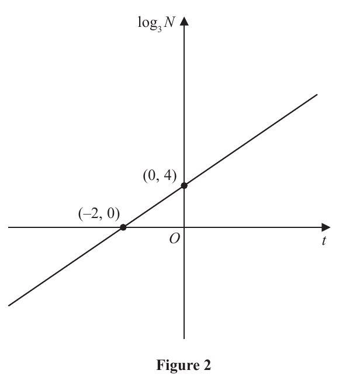
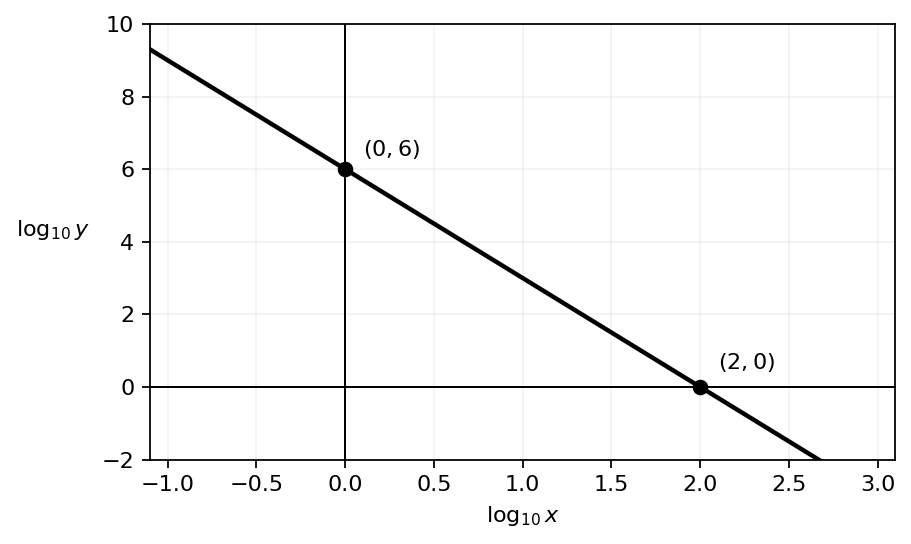

3. (i) The variables $x$ and $y$ are connected by the equation $$y=\frac{10^6}{x^3}\qquad x>0$$
Sketch the graph of $\log_{10}y$ against $\log_{10}x$.
Show on your sketch the coordinates of the points of intersection of the graph with the axes. (3)
(ii)

Figure 2 shows the linear relationship between $\log_3N$ and $t$.
Show that $N=ab^t$ where $a$ and $b$ are constants to be found. (3)
Part (i): Not covered in the lesson — official-reference reconstruction below.
[6 marks: (i) 3, (ii) 3]
Take base-10 logs of both sides:
$$\log_{10}y=\log_{10}(10^6)-\log_{10}(x^3)=6-3\log_{10}x.$$
Thus the graph is a straight line with gradient $-3$ and vertical intercept $(0,6)$.
On the horizontal axis, $\log_{10}y=0$:
$$0=6-3\log_{10}x\Rightarrow\log_{10}x=2.$$
So the second intercept is $(2,0)$.

Using $(-2,0)$ and $(0,4)$, the gradient is
$$m=\frac{4-0}{0-(-2)}=2.$$
Since the vertical intercept is $4$:
$$\log_3N=2t+4.$$
Raise 3 to both sides:
$$N=3^{2t+4}=3^4(3^2)^t=81\cdot9^t.$$